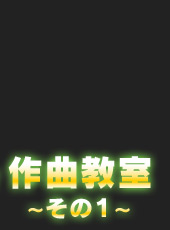
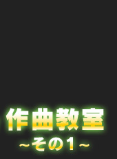
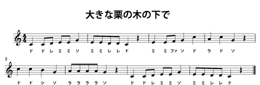
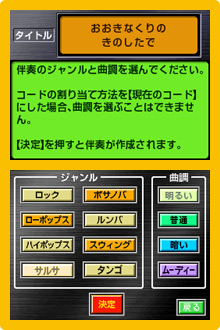

ミュージシャンにあこがれたことはありませんか？ 誰もが一度は「あんな風に曲が作れたら」と思ったことがあるのでは。
されど、音楽の入り口は素人にとっては狭き門に見えるもの、才能や経験がモノをいうんじゃないか、なんていうイメージがあるかもしれません。
ＤＳを楽器代わりにして楽しめる音楽ソフト『大合奏！バンドブラザーズＤＸ』には、「演奏」や「歌う」機能のほかにも、気軽に本格的な作曲が楽しめる機能がついているんです。今回はその『バンブラＤＸ』の作曲機能に注目して、簡単な楽譜の入力を例に曲作りのツールとしての側面を詳しく・分かりやすくご紹介。
『バンブラＤＸ』をきっかけに音楽に触れたいと思っている人や、作曲の入り口で立ち止まっている人は、作曲ツールとしての『バンブラＤＸ』の楽しみ方を発見してください。
作曲できます、とは言うものの。
実際どのように曲を作るのか？ はたまた、どうやって完成させるのか？ 最初の最初、とっかかりはどこ？ といった疑問にお答えするため、実際に作曲（楽譜の入力）にチャレンジする様子をご紹介します。
私の音楽経験は義務教育レベル。しかも、ほとんど覚えていません。もちろん楽譜も読めません。
そんな初心者代表ですが、今回は心強い味方である、『バンブラＤＸ』の開発に携わった任天堂の久馬と北村を先生として迎え、操作を教えてもらいます。よろしくお願いします！
まずは手始めに、誰でも知っている童謡、『大きな栗の木の下で』（イギリス民謡）の入力から挑戦します。
「ドレミファソラシド」だけで完成するということで、練習にはうってつけの楽曲ですね。


久馬さんにお手本を見せてもらったりしながら、本番スタート。
間違って弾いてもやり直せるので、何度でも演奏してみるといいですよ。今回の楽譜では使用しませんが、高い音や低い音を演奏するときは、１オクターブＵＰ／ＤＯＷＮのボタンを押します。演奏しながらだとちょっと難しいですが（笑）。

たまに聞こえる「♪ピー」というズレた音はご愛嬌。見たことのない音符や休符も見えたりしていますが…なんとか最後まで弾けました！
たとえ演奏をミスしたとしても、ここではそんなに気にする必要はありません。間違った箇所もあとから修正できるので安心してください。

自分で作成したメロディに、ソフトがいろいろなジャンルの伴奏を自動でつけてくれるのです。
ボサノバやロック、タンゴやサルサなど、８種類のジャンルから１つを選び、さらに細かく「明るい」「暗い」といった雰囲気選びもできるので、入力した1曲が伴奏に応じて32種類のバリエーションに変化します。
どんどん試してもらって伴奏を聴いてみて、お好みのものを選んでください。

正しい音階に直したい場合は、一度保存したあとに、メニューを戻ってもらい、「本格的作曲」から楽譜を読み込んで、一音ずつ楽譜を直せますよ。


うっ、五線譜が出てきた、ということで一瞬身構えてしまいますが、楽譜アレルギーの方も大丈夫。タッチペンで音符を上下にずらしていけば音がなるので、正しい音がなるまで確かめながら、何度も同じ箇所を聴き直し。
これは譜面の音符が耳で聴こえる音とイコールにならないビギナーとしては、大変ありがたい機能です。
さすがにこの短い曲で、何箇所も間違ったままでは困りますからね…。
画面左下の“一時停止”ボタンを押せば、任意の箇所をいつでも修正できるので、ぜひ活用してください。あと、休符は自動的に埋まっていきますから、最初は気にしなくてもいいですよ。今は音程のズレだけを直して、少しくらいのリズムのズレはそのままにしておきましょう。

自分の演奏した音がすっかり変わって聞こえますので、満足することうけあい。
余談ですが、外した音階でも自動伴奏をつけると、なぜか元からそういう音だったようにも聴こえました。
伴奏の力って素晴らしい……。
このように、まずは知っている簡単な曲から入力することをおすすめします。慣れてきたら自分の思いついたメロディも入力して友だちと一緒に演奏するといいですね。

時間にすると、わずか数分間のできごとです。
久馬先生のアドバイス通り、知っている曲のワンフレーズから試してみたり、シンプルな曲から入力すると、音楽に対する大きな親しみが持てるはず。
曲作りに慣れ、もっと本格的な作品にしたいなら、「本格的作曲」へ。
鍵盤作曲で入力した曲をもっと複雑にすることも、はじめから楽譜を使った作曲を楽しむこともできます。